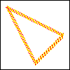
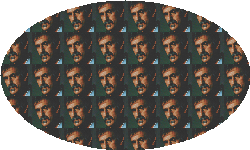
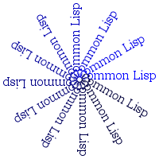

CL-GD - Use the GD Graphics library from Common Lisp
Abstract
CL-GD is a library for Common Lisp which provides an interface to the
GD Graphics Library for the
dynamic creation of images. It is based on UFFI and should thus be portable to all
CL implementations supported by UFFI.
A version which also works with CLISP is available from http://ungil.com/cl-gd-clisp.tgz
thanks to Carlos Ungil. Also, beginning from version 0.5.0/0.5.1, CL-GD
contains initial code to support CLISP and OpenMCL via CFFI (thanks to Luis
Oliveira and Bryan O'Connor). Please try it and report to the mailing list if you
have problems.
The focus of CL-GD is convenience and correctness, not necessarily speed. If you think CL-GD is too slow and you're concerned about speed, contact me before you start coding in C... :)
CL-GD comes with a BSD-style
license so you can basically do with it whatever you want. Please send bug reports to the mailing list mentioned below if you encounter any problems with CL-GD. (I'm glad to fix CL-GD but I can't do much about GD, of course. So if CL-GD basically works for you but you encounter seemingly strange behaviour when drawing please try if and how you can achieve the intended result with GD directly. That would help me a lot. Thanks.)
CL-GD is used by QuickHoney.
Download shortcut: http://weitz.de/files/cl-gd.tar.gz.
The image to the right was created with this piece of code:
 (with-image* (200 200) ; create 200x200 pixel image
(allocate-color 68 70 85) ; background color
(let ((beige (allocate-color 222 200 81))
(brown (allocate-color 206 150 75))
(green (allocate-color 104 156 84))
(red (allocate-color 163 83 84))
(white (allocate-color 255 255 255))
(two-pi (* 2 pi)))
;; move origin to center of image
(with-transformation (:x1 -100 :x2 100 :y1 -100 :y2 100 :radians t)
;; draw some 'pie slices'
(draw-arc 0 0 130 130 0 (* .6 two-pi)
:center-connect t :filled t :color beige)
(draw-arc 0 0 130 130 (* .6 two-pi) (* .8 two-pi)
:center-connect t :filled t :color brown)
(draw-arc 0 0 130 130 (* .8 two-pi) (* .95 two-pi)
:center-connect t :filled t :color green)
(draw-arc 0 0 130 130 (* .95 two-pi) two-pi
:center-connect t :filled t :color red)
(with-default-color (white)
(with-default-font (:small)
(draw-string -8 -30 "60%")
(draw-string -20 40 "20%")
(draw-string 20 30 "15%"))
(draw-freetype-string -90 75 "Global Revenue"
;; this assumes that 'DEFAULT_FONTPATH'
;; is set correctly
:font-name "verdanab"))))
(write-image-to-file "chart.png"
:compression-level 6 :if-exists :supersede))
(with-image* (200 200) ; create 200x200 pixel image
(allocate-color 68 70 85) ; background color
(let ((beige (allocate-color 222 200 81))
(brown (allocate-color 206 150 75))
(green (allocate-color 104 156 84))
(red (allocate-color 163 83 84))
(white (allocate-color 255 255 255))
(two-pi (* 2 pi)))
;; move origin to center of image
(with-transformation (:x1 -100 :x2 100 :y1 -100 :y2 100 :radians t)
;; draw some 'pie slices'
(draw-arc 0 0 130 130 0 (* .6 two-pi)
:center-connect t :filled t :color beige)
(draw-arc 0 0 130 130 (* .6 two-pi) (* .8 two-pi)
:center-connect t :filled t :color brown)
(draw-arc 0 0 130 130 (* .8 two-pi) (* .95 two-pi)
:center-connect t :filled t :color green)
(draw-arc 0 0 130 130 (* .95 two-pi) two-pi
:center-connect t :filled t :color red)
(with-default-color (white)
(with-default-font (:small)
(draw-string -8 -30 "60%")
(draw-string -20 40 "20%")
(draw-string 20 30 "15%"))
(draw-freetype-string -90 75 "Global Revenue"
;; this assumes that 'DEFAULT_FONTPATH'
;; is set correctly
:font-name "verdanab"))))
(write-image-to-file "chart.png"
:compression-level 6 :if-exists :supersede))
See below for more examples.
CL-GD together with this documentation can be downloaded from http://weitz.de/files/cl-gd.tar.gz. The
current version is 0.5.8. A Debian package is available thanks to Peter van Eynde and Kevin Rosenberg, so if you're on Debian you should have no problems installing CL-GD. There's also a port
for Gentoo Linux thanks to Matthew Kennedy. Otherwise, proceed like this:
- Download and install a recent version of GD and its supporting
libraries. Please use your operating system's package manager to
install the "development" version of the GD library. On Ubuntu
Linux, this can be achieved with the command:
apt-get install libgd2-xpm-dev
GD depends on several other libraries to handle different
graphics formats. These should be installed by your package
manager automatically. If you cannot use or do not have a
package manager that includes GD, you'll have to follow the GD
installation instructions (http://www.boutell.com/gd/). Note
that you won't be able to compile CL-GD unless you have installed
all supporting libraries. This is different from using GD
directly from C where you only have to install the libraries you
intend to use.
- Install cl-gd and its Lisp dependencies using Quicklisp
- Compile
cl-gd-glue.c into a shared library for your platform. On FreeBSD or Linux this would be
make
and on OSX it would be
make cl-gd-glue.dylib
(Note: On older versions of Linux, you might have to add -liconv.)
- CL-GD comes with a simple test suite that can be used to check if it's
basically working. Note that this'll only test a subset of CL-GD. To
run the tests load CL-GD and then
(asdf:oos 'asdf:load-op :cl-gd-test)
(cl-gd-test:test)
If you have the georgiab.ttf
TrueType font from Microsoft you can also check the FreeType
support of CL-GD with
(cl-gd-test:test #p"/usr/X11R6/lib/X11/fonts/truetype/georgiab.ttf")
where you should obviously replace the path above with the pull path
to the font on your machine.
Note that CL-GD might work correctly even if some of the tests fail
(as long as you don't get error messages). The exact results of the
tests seem to depend on the versions of the C libraries which are
used.
It is recommended that you at least skim over the original GD documentation before you start using CL-GD.
Note: If you're on Windows you might want to try this:
- Download and install the supporting libraries (see above) from GnuWin32 and put the DLLs into a place where your Lisp's FFI will find them. The folder where your Lisp image starts up is usually a good place.
- Download the file
cl-gd-glue.dll from http://weitz.de/files/cl-gd-glue.dll and put it into the CL-GD folder. You don't need to download and install GD itself because it's already integrated into cl-gd-glue.dll.
- Start your Lisp and compile CL-GD as described above.
This works for me on Windows XP pro SP2 with AllegroCL 6.2 trial as well as with LispWorks 4.3.7 pro.
Luís Oliveira maintains a darcs
repository of CL-GD
at http://common-lisp.net/~loliveira/ediware/.
For questions, bug reports, feature requests, improvements, or patches
please use the cl-gd-devel
mailing list. If you want to be notified about future releases
subscribe to the cl-gd-announce
mailing list. These mailing lists were made available thanks to
the services of common-lisp.net.
If you want to send patches, please read this first.
In order to work with CL-GD you first have to create at least one
image - think of it as your canvas, kind of. Images can be
created from scratch or you can load an existing image file from
disk. After you've drawn something or otherwise modified your image
you can write it to a file or a stream. Once you're done with it you
must destroy it to avoid memory leaks. It is recommended that
you use the WITH-IMAGE- macros instead of the
CREATE-IMAGE- functions so you can be sure that images
will always be destroyed no matter what happens.
[Function]
create-image width height &optional true-color => image
Allocates and returns an image with size width x height (in pixels). Creates a true color image if
true-color is true - the default is NIL. You are responsible for
destroying the image after you're done with it. It is advisable to use
WITH-IMAGE instead.
[Function]
create-image-from-file file-name &optional type => image
Creates an image from the file specified by file-name (which is
either a pathname or a string). The type of the image can be provided
as type (one of the keywords :JPG, :JPEG, :GIF, :PNG, :GD, :GD2, :XBM, or :XPM), or otherwise it will be guessed from the PATHNAME-TYPE of
file-name. You are responsible for destroying the image after you're
done with it. It is advisable to use WITH-IMAGE-FROM-FILE instead.
[Function]
create-image-from-gd2-part file-name src-x src-y width height => image
Creates an image from the part of the GD2 file specified by file-name (which is
either a pathname or a string) specified by src-x, src-y, width, and height. You are responsible for destroying the image after you're
done with it. It is advisable to use WITH-IMAGE-FROM-GD2-PART instead.
[Function]
destroy-image image => result
Destroys (deallocates) image which has been created by CREATE-IMAGE,
CREATE-IMAGE-FROM-FILE, or CREATE-IMAGE-FROM-GD2-PART. result is always NIL.
[Macro]
with-image (name width height &optional true-color) form* => results
Creates an image as with CREATE-IMAGE and executes
form* with the image bound to
name. The image is
guaranteed to be destroyed before this macro exits.
[Macro]
with-image-from-file (name file-name &optional type) form* => results
Creates an image as with CREATE-IMAGE-FROM-FILE and executes
form* with the image bound to
name. The image is
guaranteed to be destroyed before this macro exits.
(with-image-from-file (old "zappa.jpg")
 (multiple-value-bind (width height)
(image-size old)
(with-image (new width height)
(allocate-color 0 255 0 :image new) ; green background
(copy-image old new 0 0 0 0 width height
:merge 50)
(write-image-to-file "zappa-green.jpg"
:image new
:if-exists :supersede))))
(multiple-value-bind (width height)
(image-size old)
(with-image (new width height)
(allocate-color 0 255 0 :image new) ; green background
(copy-image old new 0 0 0 0 width height
:merge 50)
(write-image-to-file "zappa-green.jpg"
:image new
:if-exists :supersede))))
[Macro]
with-image-from-gd2-part (name file-name src-x src-y width height) form* => results
Creates an image as with CREATE-IMAGE-FROM-GD2-PART and executes
form* with the image bound to
name. The image is
guaranteed to be destroyed before this macro exits.
[Special variable]
*default-image*
Whenever a CL-GD function or macro has an optional or keyword argument called image the default is to use *default-image*. The idea behind this is that you'll never have to provide these arguments as long as you work with one image at a time (which should be the usual case). See the example at the top of the page.
[Macro]
with-default-image (image) form* => results
This is just a convenience macro which will execute form* with *DEFAULT-IMAGE* bound to image.
[Macro]
with-image* (width height &optional true-color) form* => results
[Macro]
with-image-from-file* (file-name &optional type) form* => results
[Macro]
with-image-from-gd2-part* (file-name src-x src-y width height) form* => results
These are essentially like their asterisk-less counterparts but bind the image to *DEFAULT-IMAGE* instead.
For the rest of this document, whenever a function expects an image as
one of its arguments you must pass a value which was created
with one of the functions or macros above. An image should be
considered an opaque object which you can pass to CL-GD functions but
should otherwise leave alone. (Internally it is a foreign pointer
wrapped in a CL-GD::IMAGE structure in order to enable
type checking.)
[Function]
write-jpeg-to-stream stream &key quality image => image
Writes image image to the stream
stream as a JPEG file. If
quality is not specified, the default IJG JPEG
quality value is used. Otherwise,
quality must be an integer in the range 0-100. stream must be a character stream or a binary
stream of element type (UNSIGNED-BYTE 8). If STREAM is a character
stream, the user of this function has to make sure the external format
yields faithful output of all 8-bit characters. CL-GD knows about AllegroCL's simple streams and the bivalent streams of LispWorks 4.3 and acts accordingly, i.e. it uses WRITE-BYTE instead of WRITE-CHAR whenever possible.
[Function]
write-png-to-stream stream &key compression-level image => image
Writes image image to the stream
stream as a PNG file. If
compression-level is not specified, the default compression level at
the time zlib was compiled on your system will be used. Otherwise, a
compression level of 0 means 'no compression', a compression level of 1 means 'compressed, but as quickly as possible', a compression level
of 9 means 'compressed as much as possible to produce the smallest
possible file.' stream must be a character stream or a binary
stream of element type (UNSIGNED-BYTE 8). If STREAM is a character
stream, the user of this function has to make sure the external format
yields faithful output of all 8-bit characters. CL-GD knows about AllegroCL's simple streams and the bivalent streams of LispWorks 4.3 and acts accordingly, i.e. it uses WRITE-BYTE instead of WRITE-CHAR whenever possible.
[Function]
write-wbmp-to-stream stream &key foreground image => image
Writes image image to the stream
stream as a WBMP (wireless bitmap) file. WBMP file support is black and white
only. The color specified by the foreground argument is the
"foreground," and only pixels of this color will be set in the WBMP
file. stream must be a character stream or a binary
stream of element type (UNSIGNED-BYTE 8). If STREAM is a character
stream, the user of this function has to make sure the external format
yields faithful output of all 8-bit characters. CL-GD knows about AllegroCL's simple streams and the bivalent streams of LispWorks 4.3 and acts accordingly, i.e. it uses WRITE-BYTE instead of WRITE-CHAR whenever possible.
[Function]
write-gd-to-stream stream &key image => image
Writes image image to the stream
stream as a GD file. stream must be a character stream or a binary
stream of element type (UNSIGNED-BYTE 8). If STREAM is a character
stream, the user of this function has to make sure the external format
yields faithful output of all 8-bit characters. CL-GD knows about AllegroCL's simple streams and the bivalent streams of LispWorks 4.3 and acts accordingly, i.e. it uses WRITE-BYTE instead of WRITE-CHAR whenever possible.
[Function]
write-gif-to-stream stream &key image => image
Writes image image to the stream
stream as a GIF file. stream must be a character stream or a binary
stream of element type (UNSIGNED-BYTE 8). If STREAM is a character
stream, the user of this function has to make sure the external format
yields faithful output of all 8-bit characters. CL-GD knows about AllegroCL's simple streams and the bivalent streams of LispWorks 4.3 and acts accordingly, i.e. it uses WRITE-BYTE instead of WRITE-CHAR whenever possible.
[Function]
write-gd2-to-stream stream &key image => image
Writes image image to the stream
stream as a GD2 file. stream must be a character stream or a binary
stream of element type (UNSIGNED-BYTE 8). If STREAM is a character
stream, the user of this function has to make sure the external format
yields faithful output of all 8-bit characters. CL-GD knows about AllegroCL's simple streams and the bivalent streams of LispWorks 4.3 and acts accordingly, i.e. it uses WRITE-BYTE instead of WRITE-CHAR whenever possible.
[Function]
write-image-to-stream stream type &key &allow-other-keys => image
Writes image image to the stream
stream. The type of the image is determined by type
which must be one of the keywords :JPG, :JPEG, :GIF, :PNG, :WBMP, :GD, or :GD2. The rest of the keyword arguments are handed over to the corresponding WRITE-XXX-TO-STREAM function. stream must be a character stream or a binary
stream of element type (UNSIGNED-BYTE 8). If STREAM is a character
stream, the user of this function has to make sure the external format
yields faithful output of all 8-bit characters. CL-GD knows about AllegroCL's simple streams and the bivalent streams of LispWorks 4.3 and acts accordingly, i.e. it uses WRITE-BYTE instead of WRITE-CHAR whenever possible.
[Function]
write-image-to-file file-name &key type if-exists &allow-other-keys => image
Writes image image to the file specified by file-name (which is
either a pathname or a string). The type argument is interpreted as in WRITE-IMAGE-TO-STREAM. If it is not provided it will be guessed from the PATHNAME-TYPE of
file-name. The if-exists keyword argument is given to OPEN,
the rest of the keyword arguments are handed over to the corresponding WRITE-XXX-TO-STREAM function.
[Function]
image-width &optional image => width
Returns the width of the image image. The result of this function is affected by WITH-TRANSFORMATION.
[Function]
image-height &optional image => height
Returns the height of the image image. The result of this function is affected by WITH-TRANSFORMATION.
[Function]
image-size &optional image => width, height
Returns the width and height of the image image as two values. The results of this function are affected by WITH-TRANSFORMATION.
Images in CL-GD are usually palette-based (although true color images
are also supported) and colors have to be allocated before they can be used, i.e. whenever a function expects a color as
one of its arguments you must pass a value which was created
with one of the functions below or with a 'special' color as described in the next section.
Colors
are determined by specifying values for their red, green, blue, and
optionally alpha components. The first
three have to be integer values in the range 0-255 while the last
one has to be in the range 0-127. For a palette-based image the
first color you allocate will be its background color. Note that
colors are allocated per image, i.e. you can't allocate a color in one
image and then use it to draw something in another image.
See also the next section for some 'special colors.'
[Special variable]
*default-color*
Whenever a CL-GD function or macro has an optional or keyword argument called color the default is to use *default-color*. See WITH-DEFAULT-COLOR below.
[Macro]
with-default-color (color) form* => results
This is just a convenience macro which will execute form* with *DEFAULT-COLOR* bound to color.
[Function]
allocate-color red green blue &key alpha errorp image => color
Finds the first available color index in the image image specified,
sets its RGB values to those requested (255 is the maximum for each),
and returns the index of the new color table entry, or an RGBA value in
the case of a true color image. In either case you can then use the
returned value as a color parameter to drawing functions. When
creating a new palette-based image, the first time you invoke this
function you are setting the background color for that image. If
alpha (not greater than 127) is provided, an RGBA color will always
be allocated. If all +MAX-COLORS+ have already been allocated this
function will, depending on the value of errorp, either raise an error
or return NIL. The default is to raise an error.
[Function]
find-color red green blue &key alpha exact hwb resolve image => color
Tries to find and/or allocate a color from image's color
palette. If exact is true, the color will only be returned if it is
already allocated. If exact is false, a color which is 'close' to
the color specified by red, green, and blue (and probably alpha)
might be returned (unless there aren't any colors allocated in the
image yet). If hwb is true, the 'closeness' will be determined by hue,
whiteness, and blackness, otherwise by the Euclidian distance of the
RGB values. If resolve is true a color (probably a new one) will
always be returned, otherwise the result of this function might be
NIL. If alpha (not greater than 127) is provided, an RGBA color (or
NIL) will be returned.
alpha, exact, and hwb are mutually exclusive. resolve can't be used
together with exact or hwb.
[Function]
find-color-from-image color source-image &key alpha exact hwb resolve image => color
Tries to find and/or allocate a color from image's color
palette that corresponds to color in source-image.
find-color-from-image calls find-color
with the color components of color.
Refer to find-color for a description of the
keyword arguments.
[Function]
color-component component color &key image => component
Returns the specified color component of color. component can be
one of :RED, :GREEN, :BLUE, and :ALPHA.
[Function]
color-components color &key image => components
Returns the color components of color as a list. The components are in the
order red, green, blue, alpha.
* (defun foo ()
(with-image* (10 10)
(loop for i below +max-colors+ do
;; allocate enough colors (all gray) to fill the palette
(allocate-color i i i))
(format t "Number of colors allocated: ~A~%" (number-of-colors))
(format t "Maximal number of colors: ~A~%" +max-colors+)
(format t "Exact match for red: ~A~%" (find-color 255 0 0 :exact t))
(format t "Red, green, and blue components of 'closest' match for red: ~A~%"
(let ((match (find-color 255 0 0)))
(if match
(list (color-component :red match)
(color-component :green match)
(color-component :blue match))))))
(values))
FOO
* (foo)
Number of colors allocated: 256
Maximal number of colors: 256
Exact match for red: NIL
Red, green, and blue components of 'closest' match for red: (64 64 64)
[Function]
deallocate-color color &optional image => color
Marks the specified color color as being available for reuse. No
attempt will be made to determine whether the color index is still in
use in the image image.
[Function]
true-color-p &optional image => result
Returns true iff image is a true color image.
[Function]
number-of-colors &optional image => result
Returns the number of colors allocated in image or NIL if image is a true color image.
[Constant]
+max-colors+
Maximum number of colors for palette-based images.
[Accessor]
transparent-color &optional image => color
(setf (transparent-color &optional image) color)
Gets and sets the transparent color of image. If color is NIL there is no transparent color.
[Accessor]
alpha-blending-p &optional image => blending
(setf (alpha-blending-p &optional image) blending)
Gets and set whether pixels drawn on image will be copied literally
including alpha channel information (if blending is false) or if
their alpha channel information will determine how much of the
underlying color will shine through (if blending is true). This is
only meaningful for true color images.
[Accessor]
save-alpha-p &optional image => save
(setf (save-alpha-p &optional image) save)
Gets and sets whether PNG images will be saved with full alpha channel information.
(with-image* (200 100) (allocate-color 255 165 0) ; orange background
(with-image (brush 6 6)
(let* ((black (allocate-color 0 0 0 :image brush)) ; black background
(red (allocate-color 255 0 0 :image brush))
(blue (allocate-color 0 0 255 :image brush)))
(setf (transparent-color brush) black) ; make background transparent
;; now set the pixels in the brush
(set-pixels '(2 2 2 3 3 2 3 3)
:color blue :image brush)
(set-pixels '(3 2 3 3 1 2 1 3 4 2 4 3 2 1 3 1 2 4 3 4)
:color red :image brush)
;; then use it to draw an arc
(draw-arc 100 50 180 80 180 300
;; convert BRUSH to brush
:color (make-brush brush)))
(write-image-to-file "brushed-arc.png"
:compression-level 7
:if-exists :supersede)))
(allocate-color 255 165 0) ; orange background
(with-image (brush 6 6)
(let* ((black (allocate-color 0 0 0 :image brush)) ; black background
(red (allocate-color 255 0 0 :image brush))
(blue (allocate-color 0 0 255 :image brush)))
(setf (transparent-color brush) black) ; make background transparent
;; now set the pixels in the brush
(set-pixels '(2 2 2 3 3 2 3 3)
:color blue :image brush)
(set-pixels '(3 2 3 3 1 2 1 3 4 2 4 3 2 1 3 1 2 4 3 4)
:color red :image brush)
;; then use it to draw an arc
(draw-arc 100 50 180 80 180 300
;; convert BRUSH to brush
:color (make-brush brush)))
(write-image-to-file "brushed-arc.png"
:compression-level 7
:if-exists :supersede)))
Most drawing and string
functions (with DRAW-FREETYPE-STRING
being the only exception) will, when expecting a color, also accept other types of arguments. The
full range of allowed types which can be used for
color keyword arguments is listed below:
- A style which is either a list or a vector of colors
allocated with one of the functions described above or
NIL for transparent colors. When a style is used as the
color, the colors of the pixels are drawn successively from the
sequence provided. If the corresponding element of the sequence is
NIL, that pixel is not altered.
- A brush as created with
MAKE-BRUSH for drawing lines. A
brush is itself an image created as described
above. When a brush is used as the color, the brush image is drawn
in place of each pixel of the line drawn. (The brush is usually
larger than one pixel, creating the effect of a wide paintbrush.)
- A tile as created with
MAKE-TILE for filling regions. A
tile is itself an image created as described
above. When a tile is used as the color, a pixel from the tile image
is selected in such a way as to ensure that the filled area will be
tiled with copies of the tile image.
- A
CONS where the CAR is a brush and
the CDR is a list or a vector. This is called a
styled brush. When a styled brush is used as the color, the
brush image is drawn at each pixel of the line, provided that the
corresponding element of the style sequence is true.
(Pixels are drawn successively from the style as the line is drawn,
returning to the beginning when the available pixels in the style
are exhausted.) Note that the semantics described here differ
slightly from the styles described above.
- An anti-aliased color as created with
MAKE-ANTI-ALIASED for
drawing lines. When an anti-aliased color is used, the line is drawn
with anti-aliasing mechanisms to minimize any "jagged"
appearance.
- A 'normal' color as created with one of the functions from the
previous section.
Note that you can't arbitrarily combine 'color types' and drawing
functions, e.g. you can't set an anti-aliased pixel. However, it
should generally be obvious which types make sense and which don't.
Check the original GD
documentation for more details.
In GD itself, if you, say, change a brush after you've 'set' it with
gdImageSetBrush
but before you actually use it for drawing these changes won't be
visible, i.e. the brush is 'frozen' once it's 'set.' The same applies
to tiles and styles. CL-GD's behaviour differs in this regard,
i.e. brushes, tiles, and styles are 'set' at the very moment they're
used. This introduces a little bit of overhead but feels more 'Lisp-y'
and intuitive to me.
[Function]
make-brush image => brush
Creates a brush from the image image. Note that the new
brush is still 'linked' to image, i.e. changes you
make to image will also be visible in the
brush - the brush is just a kind of 'tagged' image.
[Function]
make-tile image => tile
Creates a tile from the image image. Note that the new
tile is still 'linked' to image, i.e. changes you
make to image will also be visible in the
tile - the tile is just a kind of 'tagged' image.
[Function]
make-anti-aliased color &optionaldo-not-blend => color'
Creates an anti-aliased color from the
color
color. do-not-blend (if provided) is the
color anti-aliased lines stand out against clearly.
(with-image* (150 50) (let ((orange (allocate-color 255 165 0)) ; orange background
(white (allocate-color 255 255 255))
(red (allocate-color 255 0 0)))
;; white background rectangle in the middle third
(draw-rectangle* 50 0 99 49
:filled t
:color white)
(with-thickness (2)
;; just a red line
(draw-line 5 10 145 10 :color red)
;; anti-aliased red line
(draw-line 5 25 145 25 :color (make-anti-aliased red))
;; anti-aliased red line which should stand out against
;; orange background
(draw-line 5 40 145 40 :color (make-anti-aliased red orange))))
(write-image-to-file "anti-aliased-lines.png"
:compression-level 3
:if-exists :supersede))
(let ((orange (allocate-color 255 165 0)) ; orange background
(white (allocate-color 255 255 255))
(red (allocate-color 255 0 0)))
;; white background rectangle in the middle third
(draw-rectangle* 50 0 99 49
:filled t
:color white)
(with-thickness (2)
;; just a red line
(draw-line 5 10 145 10 :color red)
;; anti-aliased red line
(draw-line 5 25 145 25 :color (make-anti-aliased red))
;; anti-aliased red line which should stand out against
;; orange background
(draw-line 5 40 145 40 :color (make-anti-aliased red orange))))
(write-image-to-file "anti-aliased-lines.png"
:compression-level 3
:if-exists :supersede))
Usually, CL-GD coordinates and dimensions (width and height) have to be integers. The origin (0,0) of an image is its upper left corner and all other points like (X,Y) have positive X and Y values. Angles are also provided as integers (in the range 0-360) meaning degrees. A transformation provides a way to change this.
[Macro]
with-transformation (&key x1 x2 width y1 y2 height reverse-x reverse-y radians image) form* => results
Executes form* such that all points and width/height data are
subject to a simple affine transformation defined by the keyword
parameters. The new x-axis of image will start at x1 and end at x2 and
have length width. The new y-axis of image will start at y1 and end at
y2 and have length height. In both cases it suffices to provide two of
the three values - if you provide all three they have to match. If
reverse-x is false the x-axis will be oriented as usual in Cartesian
coordinates, otherwise its direction will be reversed. The same
applies to reverse-y, of course. If radians is true angles inside of
the macro's body will be assumed to be provided in radians, otherwise in degrees. The previous transformation (if any) will be restored before this macro exits.
with-transformation macros can be nested but they always transform the original coordinates of the image, i.e. you shouldn't expect that, say, two succesive applications of reverse-x will neutralize each other. There's a little bit of overhead involved with this macro, so it is recommended to wrap it around everything you do with an image instead of calling it repeatedly. Note that transformations are always bound to one particular image.
[Macro]
without-transformations form* => results
Executes form* without any transformations applied.
This section (and the next one about strings) finally describes how you can actually change the visual appearance of an image. You can set single pixels, draw lines or geometric figures, and fill regions. Note that the current transformation (if any) applies to the input and output of these functions.
[Function]
get-pixel x y &key image => color
Returns the color of the pixel specified by x and y.
[Function]
set-pixel x y &key color image => x, y
Sets the pixel specified by x and y to the color specified by color.
[Generic function]
set-pixels points &key color image => points
Sets the pixels specified by points which can be a list (X1 Y1 X2 Y2 ...) or a vector #(X1 Y1 X2 Y2 ...) to the color specified by color.
[Function]
draw-line x1 y1 x2 y2 &key color image => x1, y1, x2, y2
Draws a line with color color from point (x1,y1) to point (x2,y2).
[Function]
draw-rectangle rectangle &key filled color image => rectangle
Draws a rectangle with upper left corner (X1,Y1) and lower right corner (X2,Y2) where rectangle is the list (X1 Y2 X2 Y2). If filled is true the rectangle will be filled with color, otherwise it will be outlined.
[Function]
draw-rectangle* x1 y1 x2 y2 &key filled color image => x1, y1, x2, y2
Draws a rectangle with upper left corner (x1,y1) and lower right corner (x2,y2). If filled is true the rectangle will be filled with color, otherwise it will be outlined.
[Generic function]
draw-polygon vertices &key filled start end color image => vertices
Draws a polygon with the vertices (at least three)
specified as a list (X1 Y1 X2 Y2 ...) or as a vector #\(X1 Y1 X2 Y2 ...).
If filled is true the polygon will be filled with the color color,
otherwise it will be outlined. If start and/or end are specified then
only the corresponding part of vertices is used as input.
(with-image* (100 100)
(allocate-color 255 255 255) ; white background
(let ((red (allocate-color 255 0 0))
(yellow (allocate-color 255 255 0))
(orange (allocate-color 255 165 0)))
;; thin black border
(draw-rectangle* 0 0 99 99
:color (allocate-color 0 0 0))
;; line thickness is five pixels
(with-thickness (5)
;; triangle
(draw-polygon (list 10 10 90 50 50 90)
;; styled color
:color (list red red red
yellow yellow yellow
nil nil nil
orange orange orange))
(write-image-to-file "triangle.png"
:compression-level 8
:if-exists :supersede))))
[Function]
draw-filled-circle center-x center-y radius &key color image => center-x center-y radius
Draws a filled circle with center (center-x,center-y) and radius radius.
[Function]
draw-filled-ellipse center-x center-y width height &key color image => center-x center-y width height
Draws a filled ellipse with center (center-x,center-y), width width, and height height.
(with-image* (250 150)
(with-image-from-file (zappa "smallzappa.png")
(setf (transparent-color) (allocate-color 255 255 255))
(draw-filled-ellipse 125 75 250 150
:color (make-tile zappa)))
(write-image-to-file "zappa-ellipse.png"
:if-exists :supersede))
[Function]
draw-arc center-x center-y width height start end &key straight-line center-connect filled color image => center-x, center-y, width, height, start, end
Draws a partial ellipse centered at (center-x,center-y) with
width width and height height. The arc begins at angle start and ends
at angle end. If straight-line is true the start and end points are
just connected with a straight line. If center-connect is true, they
are connected to the center (which is useful to create 'pie
slices' - see example at the top of the page.). If filled is true the arc will be filled with the color color, otherwise it will be outlined.
[Function]
fill-image x y &key border color image => x, y
Floods a portion of the image image with the color color beginning
at point (x,y) and extending into the surrounding region. If border
is true it must be a color and the filling will stop at the specified
border color. (You can't use 'special colors' for the border color.) Otherwise only points with the same color as the
starting point will be colored. If color is a tile the tile must not have a transparent color.
[Accessor]
clipping-rectangle &optional image => rectangle
(setf (clipping-rectangle &optional image) rectangle)
Gets and sets the clipping rectangle of image where rectangle should be a
list (X1 Y1 X2 Y2) describing the upper left and lower right corner of the rectangle. Once a clipping rectangle has been set, all future drawing operations on image will remain within the specified clipping area, until a new clipping rectangle is established. For instance, if a clipping rectangle (25 25 75 75) has been set within a 100x100 image, a diagonal line from (0,0) to (99,99) will appear only between (25,25) and (75,75). See also CLIPPING-RECTANGLE* and SET-CLIPPING-RECTANGLE*.
[Function]
clipping-rectangle* &optional image => x1, y1, x2, y2
Returns the clipping rectangle of image as four values.
[Function]
set-clipping-rectangle* x1 y1 x2 y2 &optional image => x1, y1, x2, y2
Sets the clipping rectangle of image as if set with (SETF (CLIPPING-RECTANGLE IMAGE) (LIST X1 Y1 X2 Y2)).
[Macro]
with-clipping-rectangle (rectangle &key image) form* => results
Executes form* with the clipping rectangle of image set to rectangle
which should be a list as in CLIPPING-RECTANGLE. The previous clipping rectangle
is guaranteed to be restored before the macro exits.
[Macro]
with-clipping-rectangle* (x1 y1 x2 y2 &key image) form* => results
Executes form* with the clipping rectangle of image set as if set with (SETF (CLIPPING-RECTANGLE IMAGE) (LIST X1 Y1 X2 Y2)). The previous clipping rectangle
is guaranteed to be restored before the macro exits.
(with-image* (150 150) (allocate-color 255 255 255) ; white background
;; transform such that x axis ranges from (- PI) to PI and y
;; axis ranges from -3 to 3
(with-transformation (:x1 (- pi) :width (* 2 pi) :y1 -3 :y2 3)
(let ((black (allocate-color 0 0 0))
(red (allocate-color 255 0 0))
(rectangle (list (- .4 pi) 2.5 (- pi .4) -2.5)))
(with-default-color (black)
;; draw axes
(draw-line 0 -3 0 3 :color black)
(draw-line (- pi) 0 pi 0))
;; show clipping rectangle (styled)
(draw-rectangle rectangle :color (list black black black nil black nil))
(with-clipping-rectangle (rectangle)
;; draw tangent function
(loop for x from (- pi) below (* 2 pi) by (/ pi 75) do
(set-pixel x (tan x) :color red)))))
(write-image-to-file "clipped-tangent.png"
:if-exists :supersede))
(allocate-color 255 255 255) ; white background
;; transform such that x axis ranges from (- PI) to PI and y
;; axis ranges from -3 to 3
(with-transformation (:x1 (- pi) :width (* 2 pi) :y1 -3 :y2 3)
(let ((black (allocate-color 0 0 0))
(red (allocate-color 255 0 0))
(rectangle (list (- .4 pi) 2.5 (- pi .4) -2.5)))
(with-default-color (black)
;; draw axes
(draw-line 0 -3 0 3 :color black)
(draw-line (- pi) 0 pi 0))
;; show clipping rectangle (styled)
(draw-rectangle rectangle :color (list black black black nil black nil))
(with-clipping-rectangle (rectangle)
;; draw tangent function
(loop for x from (- pi) below (* 2 pi) by (/ pi 75) do
(set-pixel x (tan x) :color red)))))
(write-image-to-file "clipped-tangent.png"
:if-exists :supersede))
[Accessor]
current-thickness &optional image => thickness
(setf (current-thickness &optional image) thickness)
Get and sets the current thickness of image in pixels. This determines the width of lines drawn with the drawing functions. thickness has to be an integer. See also WITH-THICKNESS.
[Macro]
with-thickness (thickness &key image) form* => results
Executes form* with the current thickness of image set to thickness. The image's previous thickness is guaranteed to be restored
before the macro exits.
CL-GD (actually GD) comes with five included fonts which can be accessed with the keywords :TINY, :SMALL, :MEDIUM, :MEDIUM-BOLD (a synonym for :MEDIUM), :LARGE, and :GIANT and used with DRAW-STRING and DRAW-CHARACTER. Using these fonts will make your application portable to all platforms supported by CL-GD (and thus GD). You can also invoke the FreeType library to draw (anti-aliased) strings with arbitrary TrueType fonts, sizes, and angles. This is, however, subject to the availability and location of the corresponding fonts on your target platform.
[Special variable]
*default-font*
Whenever a CL-GD string or character function has an optional or keyword argument called font or font-name the default is to use *default-font*. See WITH-DEFAULT-FONT below.
[Macro]
with-default-font (font) form* => results
This is just a convenience macro which will execute form* with *DEFAULT-FONT* bound to font. But
note that the fonts used for DRAW-STRING/DRAW-CHARACTER and DRAW-FREETYPE-STRING are incompatible
[Function]
draw-character x y char &key up font color image => char
Draws the character char from font font in color color at position (x,y). If
up is true the character will be drawn from bottom to top (rotated 90 degrees). font must be one of the keywords listed above.
[Function]
draw-string x y string &key up font color image => string
Draws the string string in color color at position (y,y). If
up is true the string will be drawn from bottom to top (rotated 90 degrees). font must be one of the keywords listed above.
[Function]
draw-freetype-string x y string &key anti-aliased point-size angle convert-chars line-spacing font-name do-not-draw color image => bounding-rectangle
Draws the string string in color color at position (x,y) using the
FreeType library. font-name is the full path (a pathname or a string)
to a TrueType font file, or a font face name if the GDFONTPATH
environment variable or FreeType's DEFAULT_FONTPATH variable have been
set intelligently. The string may be arbitrarily scaled (point-size)
and rotated (angle in radians). The direction of rotation is
counter-clockwise, with 0 radians (0 degrees) at 3 o'clock and (/ PI 2) radians (90 degrees) at 12 o'clock. Note that the angle argument is
purposefully not affected by WITH-TRANSFORMATION. If anti-aliased if
false, anti-aliasing is disabled. It is enabled by default. To output
multiline text with a specific line spacing, provide a value for
line-spacing, expressed as a multiple of the font height. The default
is to use 1.05. The string may contain XML character entity references
like "À". If convert-chars is true (which is the default)
characters of string with CHAR-CODE greater than 127 are converted
accordingly. This of course pre-supposes that your Lisp's CHAR-CODE
function returns ISO/IEC 10646 (Unicode) character codes.
The return value is an array containing 8 elements representing
the 4 corner coordinates (lower left, lower right, upper right, upper left) of the bounding rectangle around the
string that was drawn. The points are relative to the text regardless
of the angle, so "upper left" means in the top left-hand
corner seeing the text horizontally. Set do-not-draw
to true to get the bounding
rectangle without rendering. This is a relatively cheap operation if
followed by a rendering of the same string, because of the caching of
the partial rendering during bounding rectangle calculation.
(with-image* (200 200)
;; set background (white) and make it transparent
(setf (transparent-color)
(allocate-color 255 255 255))
(loop for angle from 0 to (* 2 pi) by (/ pi 6)
for blue downfrom 255 by 20 do
(draw-freetype-string 100 100 "Common Lisp"
:font-name "/usr/X11R6/lib/X11/fonts/truetype/georgia.ttf"
:angle angle
;; note that ALLOCATE-COLOR won't work
;; here because the anti-aliasing uses
;; up too much colors
:color (find-color 0 0 blue
:resolve t)))
(write-image-to-file "strings.png"
:if-exists :supersede))
CL-GD supports the creation of animated GIF images. Reading animated
GIFs is not supported by GD, and consequently not supported by CL-GD.
When opening an animated GIF, only the first frame in the file is
read.
In order to create an animated GIF, a background image must be created
which defines the canvas for the animation. Then, the animation is
created using the with-animated-gif macro and images are added
to the animation with add-image-to-animation.
The color map can either be shared by all frames, or each frame can
have its own color map. If a shared color map is desired, the
:global-color-map-p keyword argument
of with-animated-gif must
be set to a true value.
[Macro]
with-animated-gif (filename &key
animation background-image global-color-map-p loop-count default-delay)
form* => results
Establish a GIF animation context. filename
specifies the GIF file to write. animation
specifies the name of the animation context variable. It does not
normally need to be set, but it may be useful when multiple animated
GIFs need to be created at the same time. Pass a symbol to use as
context variable name. background-image specifies
the background image to use for the animation, it defaults to
*default-image*. global-color-map-p
specifies whether a global colormap that is shared between all frames
should be used, or each frame has its own
colormap. loop-count sets the loop counter. -1 means
loop forever, 0 means that the animation is executed once, positive values
indicate the number of repetitions. default-delay
indicates the default frame delay in 1/100s of a second. It can be
overridden for each fream in add-image-to-animation.
[Function]
add-image-to-animation image &key
local-color-map-p left-offset top-offset delay disposal last-image animation => char
Add one frame to an animated GIF. image is the image
to add. local-color-map-p, if non-NIL, specifies that
the frame should not use the global color
map. left-offset and top-offset
specify where this frame should be placed on the
background. delay specifies the delay for this frame
in 1/100s of a second. disposal specifies how the
frame is treated after it has been displayed. It can be one
of :none (the frame just stays on the
background), :restore-background (the affected area
will be set to the first color of the palette) or
:restore-previous (the previous contents of the image
is restored). last-image can be specified to enable
the GIF animation optimizer. If specified, only the changed pixels will
be contained in the frame. This works best with a global color map, and a
transparent color is required for it to work properly.
The top-offset and top-offset are
ignored when optimizing is enabled, and disposal must
be specified as :none.
(with-image* (100 100)
(setf (transparent-color) (allocate-color 255 255 255))
(let ((blue (allocate-color 0 0 255)))
(with-animated-gif ("test-anim.gif"
:global-color-map-p t
:loop-count -1
:default-delay 5)
(loop with last-image
for i from 0 below 100 by 10
for cim = (create-image 100 100)
do (draw-arc 50 50 i i 0 360 :filled t :color blue :image cim)
(add-image-to-animation cim :last-image last-image)
(when last-image
(destroy-image last-image))
(setf last-image cim)
finally (destroy-image last-image)))))
Things that didn't seem to fit into one of the other categories...
[Macro]
do-rows (y-var &optional image) declaration* form* => results
This macro loops through all rows (from top to bottom) in turn and
executes form* for each row with
y-var bound to the vertical index of the current row
(starting with 0). It is not affected by WITH-TRANSFORMATION.
[Local macro]
do-pixels-in-row (x-var) declaration* form* => results
This macro is only available within the body of a DO-ROWS form.
It loops through all pixels (from left to right) in turn and
executes form* for each pixel with
x-var bound to the horizontal index of the current pixel
(starting with 0). It is not affected by WITH-TRANSFORMATION.
[Macro]
do-pixels (&optional image) declaration* form* => results
This is a shortcut for the previous two macros. It loops through all pixels and executes form* for each pixel. Obviously it only makes sense when used together with RAW-PIXEL.
[Accessor]
raw-pixel => pixel
(setf (raw-pixel) pixel)
This accessor is only available within the body of a DO-PIXELS-IN-ROW form (and
thus also within DO-PIXELS
forms). It provides access to the "raw" pixel the loop is
currently at, i.e. for true color images you access an element of the
im->tpixels array, for palette-based images it's
im->pixels. Read the original GD
documentation for details. Make sure you know what you're doing if
you change these values...
* (with-image* (3 3 t) ; true-color image with 3x3 pixels
(draw-rectangle* 0 0 2 2 :color (allocate-color 0 0 0)) ; black background
(draw-line 0 0 2 2 :color (allocate-color 255 255 255)) ; white line
(do-pixels ()
;; loop through all pixels and change those which arent't black
(unless (zerop (raw-pixel))
(decf (raw-pixel) #xff)))
(do-rows (y)
;; loop through all rows
(format t "Starting with row ~A~%" y)
(do-pixels-in-row (x)
;; loop through all pixels in row
(format t " Pixel <~A,~A> has value ~X~%" x y (raw-pixel)))
(format t "Done with row ~A~%" y)))
Starting with row 0
Pixel <0,0> has value FFFF00 ; the line is yellow now
Pixel <1,0> has value 0
Pixel <2,0> has value 0
Done with row 0
Starting with row 1
Pixel <0,1> has value 0
Pixel <1,1> has value FFFF00
Pixel <2,1> has value 0
Done with row 1
Starting with row 2
Pixel <0,2> has value 0
Pixel <1,2> has value 0
Pixel <2,2> has value FFFF00
Done with row 2
NIL
[Accessor]
interlacedp &optional image => interlaced
(setf (interlacedp &optional image) interlaced)
Gets or sets whether image will be stored in an interlaced fashion.
[Function]
differentp image1 image2 => different
Returns false if the two images won't appear different when
displayed. Otherwise the return value is a list of keywords describing
the differences between the images.
[Function]
copy-image source destination source-x source-y dest-x dest-y width height &key resample rotate angle resize dest-width dest-height merge merge-gray => destination
Copies (a part of) the image source into the image destination. Copies the
rectangle with the upper left corner (source-x,source-y) and size
width x height to the rectangle with the upper left corner (dest-x,dest-y).
If resample is true pixel colors will be
smoothly interpolated. If resize is true
the copied rectangle will be strechted or shrunk so that its size is
dest-width x
dest-height. If rotate is true
the image will be rotated by angle. In this
particular case dest-x and
dest-y specify the center of the copied
image rather than its upper left corner! If merge
is true then it has to be an integer in the range 0-100 and the
two images will be 'merged' by the amount specified. If
merge is 100 then the source image will simply be
copied. If instead merge-gray is true the hue of
the source image is preserved by converting the destination area to
gray pixels before merging.
The keyword arguments resample, rotate, resize, merge, and merge-gray
are mutually exclusive (with the exception of resample and
resize). angle is assumed to be specified in degrees if it's an
integer, and in radians otherwise. This function is not affected by WITH-TRANSFORMATION.
[Function]
copy-palette source destination => destination
Copies the palette of the image source to the image destination attempting to
match the colors in the target image to the colors in the source palette.
[Function]
true-color-to-palette &key dither colors-wanted image => image
Converts the true color image image to a palette-based image using
a high-quality two-pass quantization routine. If dither is true, the
image will be dithered to approximate colors better, at the expense of
some obvious "speckling." colors-wanted can be any positive integer
up to 256 (which is the default). If the original source image
includes photographic information or anything that came out of a JPEG,
256 is strongly recommended. 100% transparency of a single transparent
color in the original true color image will be preserved. There is no
other support for preservation of alpha channel or transparency in the
destination image.
(with-image* ((+ 256 384) 384 t)
(let ((white (allocate-color 255 255 255))
(red (allocate-color 255 0 0))
(green (allocate-color 0 255 0))
(blue (allocate-color 0 0 255))
(vertices (list 64 0 0 128 128 128))
(image-width (image-width))
(image-height (image-height)))
(setf (transparent-color) white)
(draw-rectangle* 0 0 image-width image-height :color white)
;; "demoin.png" is part of the GD distribution
(with-image-from-file (in-file "demoin.png")
(copy-image in-file *default-image*
0 0 32 32 192 192
:resize t
:dest-width 255
:dest-height 255
:resample t)
(multiple-value-bind (in-width in-height)
(image-size in-file)
(loop for a below 360 by 45 do
(copy-image in-file *default-image*
0 0
(+ 256 192 (* 128 (cos (* a .0174532925))))
(- 192 (* 128 (sin (* a .0174532925))))
in-width in-height
:rotate t
:angle a))
(with-default-color (green)
(with-thickness (4)
(draw-line 16 16 240 16)
(draw-line 240 16 240 240)
(draw-line 240 240 16 240)
(draw-line 16 240 16 16))
(draw-polygon vertices :filled t))
(dotimes (i 3)
(incf (nth (* 2 i) vertices) 128))
(draw-polygon vertices
:color (make-anti-aliased green)
:filled t)
(with-default-color (blue)
(draw-arc 128 128 60 20 0 720)
(draw-arc 128 128 40 40 90 270)
(fill-image 8 8))
(with-image (brush 16 16 t)
(copy-image in-file brush
0 0 0 0
in-width in-height
:resize t
:dest-width (image-width brush)
:dest-height (image-height brush))
(draw-line 0 255 255 0
:color (cons (make-brush brush)
(list nil nil nil nil nil nil nil t))))))
(with-default-color (red)
(draw-string 32 32 "hi" :font :giant)
(draw-string 64 64 "hi" :font :small))
(with-clipping-rectangle* (0 (- image-height 100) 100 image-height)
(with-default-color ((make-anti-aliased white))
(dotimes (i 100)
(draw-line (random image-width)
(random image-height)
(random image-width)
(random image-height))))))
(setf (interlacedp) t)
(write-image-to-file "demoout.png"
:if-exists :supersede)
(true-color-to-palette)
(write-image-to-file "demooutp.png"
:if-exists :supersede))
This last example is the demo which comes with GD. The equivalent C code is here.

Thanks to Thomas Boutell for GD and thanks to Kevin Rosenberg
for UFFI without which CL-GD would
not have been possible. Kevin was also extremely helpful when I needed
functionality which wasn't yet part of UFFI. Thanks to Hans
Hübner for the GIF patches. Thanks to Manuel Odendahl for lots of useful patches.
Thanks to Luis Oliveira for CLISP/CFFI support and to Bryan O'Connor for OpenMCL support.
$Header: /usr/local/cvsrep/gd/doc/index.html,v 1.77 2009/11/23 17:04:47 edi Exp $
BACK TO MY HOMEPAGE